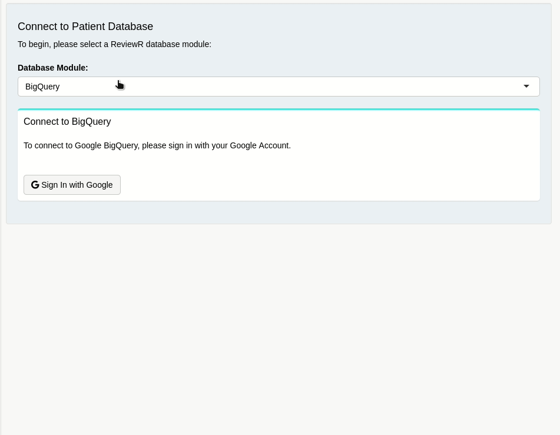

vignettes/customize_support_new_rdbms.Rmd
customize_support_new_rdbms.RmdDatabase connections in ReviewR are created with the help of the DBI Package from RStudio. This allows ReviewR to interact with any database supported by DBI. A full list of compatible database back-ends* can be found here.
Within ReviewR, DBI connection objects are programmatically created to facilitate user connections to patient databases. This connection object defines the type of database, connection information (IP address, port, etc.), and the user with any associated credentials. These connection objects can then be used to create access tables within the database.
ReviewR facilitates these DBI connections through the use of Shiny Modules. Modules are a way to make a complex Shiny application more manageable. They compartmentalize code and are developed for a specific purpose. At their core, modules monitor user inputs that are defined in a User Interface (UI) function, process these inputs in a server function, and return an output. Each module operates in its own namespace, meaning that shiny modules are portable and can be used in other applications or reused within the same application.
In ReviewR, this concept is used to create “database modules.” Each patient database back-end will have different connection requirements, meaning a new UI is needed to collect the required connection information from the user. By modularizing this connection code, ReviewR can support multiple databases so long as a correctly formatted DBI connection object is returned to the ReviewR application. Thus “database modules” are shiny modules that are responsible for collecting appropriate database credentials and returning a DBI connection object.
A special database setup module has been created within ReviewR that allows it to interactively switch between database modules that have been developed for the package. These modules consist of a UI to guide the user through establishing a database connection and a server responsible for validating user inputs, establishing a connection, and returning a DBI connection object. Users can extend the functionality of ReviewR by adding developed database modules to R/mod_database_setup.R as shown below:
# Database Module Setup ----
namespace <- 'db-selector-ns'
# ~~~~~~~~~~~~~~~~~~~~~~~~~~~~~~~~~~~ Add Database Setup Modules Here!!! ~~~~~~~~~~~~~~~~~~~~~~~~~~~~~~~~~~~ #
## Add Database Setup Modules Here
database_setup_vars <- reactiveValues(bigquery = bigquery_setup_server(id = namespace ),
postgresql = postgresql_setup_server(id = namespace ) #,
# new_module = new_module_setup_server(id = namespace)
)
# ~~~~~~~~~~~~~~~~~~~~~~~~~~~~~~~~~~~~~~~~~~~~~~~~~~~~~~~~~~~~~~~~~~~~~~~~~~~~~~~~~~~~~~~~~~~~~~~~~~~~~~~~~~ #Once modules are added to the package, they will appear in the Patient Database Module drop down on the setup tab. 
Read on to learn how to develop a database module for ReviewR!
*Note: Supported Databases must also have dplyr support.
Creating a Shiny module is very similar to developing a stand alone Shiny App. When developing a database module for ReviewR, there are a few differences that result because of its package architecture. A template has been provided so that some aspects of ReviewR database module development can be highlighted in the sections that follow.
If you are familiar with Shiny modules and want to begin developing right away, you may skip ahead to the Start Developing Section of this guide.
The first step to developing a new ReviewR module will be to fork the latest version of ReviewR from GitHub. Forking the repository will allow you to experiment with the ReviewR package and ensures you have access to the latest development tools and file structure of the ReviewR package. For simplicity, the home directory is specified as a destination directory:
# install.packages('usethis')
usethis::create_from_github(repo_spec = 'thewileylab/ReviewR', destdir = '~/')Please see this guide if you have trouble connecting RStudio with Git. It is also possible to fork this repository directly from GitHub if all else fails.
Navigate to the forked repository and open the ReviewR.Rproj file. This will open the project in RStudio. Finally, using the devtools package run:
# install.packages('devtools')
devtools::load_all()This will load the most recent version of ReviewR. At this point, you are ready to begin developing a database module.
A helper function, dev_database_module(), has been provided with ReviewR to help jump start the database module development process. Run:
ReviewR:::dev_database_module(mod_name = 'your_module', display_name = 'Your Module Display Name')This will create a module file in the R/ directory of the ReviewR package and open it for editing.
Take note of the ReviewR Database Module Template. It consists of 2 functions:
ReviewR utilizes the moduleServer() function introduced in Shiny 1.5. This allows the server portion of a module to be called within your application just like any other function, instead of relying on the previous callModule() syntax.
The next thing to note is that ReviewR modules will ultimately become a part of the ReviewR package namespace. This means that both the UI and Server functions require roxygen comments, with all function parameters, returns, and necessary package imports declared.
For additional information on module development, please see: https://shiny.rstudio.com/articles/modules.html
{module_name}_setup_ui that accepts a single parameter (id){module_name}_setup_server with a reactiveValues() return
Begin by adding Shiny Widgets to the tagList() portion of the UI function in your database module. Users will interact with these widgets to enter their database credentials. Consider adding a “Connect” and “Disconnect” button to your UI which can be monitored by your server function to store the user entered credentials and combine them into a DBI connection object. Specifics will vary by database. Remember to wrap all user inputID’s with the ns() function, so that they will inherit the module namespace.
tagList(
actionButton(inputId = ns('connect'),label = 'connect'),
actionButton(inputId = ns('disconnect'),label = 'disconnect')
)As mentioned previously, the entire goal of a ReviewR database module is to construct a DBI connection object with user entered information. This DBI connection object needs to be assigned to the db_con reactive values object, say when a user clicks a button labeled ‘connect’. However, this user entered information should be validated. Consider the following pseudo code:
library(shiny)
## Observe a connect button, defined in the UI function
observeEvent(input$connect, {
## When the button is pressed, store a temporary connection
temp_con <- DBI::dbConnect(drv = database_driver(),
user = input$username, ## A text input, with a username
pass = input$password ## A password input
)
## Design a test to validate the temporary connection object
test_result <- connection_test(temp_con)
## If the test passes, update the reactiveValues objects for the `is_connected` and `db_con` variables
if(test_result == TRUE) {
database_export$is_connected <- 'yes'
database_export$db_con <- temp_con
## Else, don't create connection info
} else {
database_export$is_connected <- 'no'
}
})
## Let ReviewR handle the rest!The database setup module in ReviewR is ‘observing’ the return of the currently selected database module. When the is_connected variable changes to ‘yes’, it knows that valid connection information is present, and it can begin working with the connected database.
Database modules are also responsible for clearing connection information when a user wants to disconnect. Here is a simple example of a database disconnect where a user presses a ‘disconnect’ button:
## Observe a connect button, defined in the UI function
observeEvent(input$disconnect, (
## Tell the database you are disconnecting
DBI::dbDisconnect(database_export$db_con)
## Clear the connection info
database_export$db_con <- NULL
## Set `is_connected` variable back to 'no'
database_export$is_connected <- 'no'
))Think about how users will be interacting with this module. When a button is clicked, how will they notice that changes are being processed? Will an error message be displayed if incorrect credentials are entered? When connected, will a “connection success” message be presented?
As you are developing/testing, remember to add your completed setup_server function to R/mod_database_setup.R. This is required to have the module display within ReviewR. When incorporated into ReviewR, the moduleName parameter of the database module’s reactiveValues will be what appears in the Database Module Selector drop down list. Once you are sure you have added your module to mod_database_setup.R and you are ready to test, run:
golem::document_and_reload()This will incorporate your newly developed module into the ReviewR namespace, allowing you to see any changes that you have made as a result of your development process.
Once you are satisfied with your module and have sufficiently tested its functionality, run:
devtools::install()This will install a new, custom version of the ReviewR package with your newly developed module incorporated.
# UI ----
#' {display_name} Setup UI
#'
#' This module is designed to guide a user through the process of authenticating your database
#'
#' @param id The module namespace
#'
#' @return The {display_name} Setup UI
#' @export
#'
#' @importFrom shiny NS
#'
{mod_name}_setup_ui <- function(id) {
ns <- NS(id)
tagList(
## UI widgets here ----
)
}
# Server ----
#' {display_name} Setup Server
#'
#' @param id The Module namespace
#'
#' @return {display_name} connection variables
#' @export
#'
#' @importFrom DBI dbConnect
#'
{mod_name}_setup_server <- function(id) {
moduleServer(
id,
function(input, output, session) {
ns <- session$ns
## {mod_name} Export Values ----
{mod_name}_export <- reactiveValues(
### Module Info
moduleName = '{display_name}',
moduleType = 'database',
setup_ui = ReviewR::{mod_name}_setup_ui,
is_connected = 'no',
db_con = NULL
)
# Server Code Here ----
# Return ----
return({mod_name}_export)
}
)
}